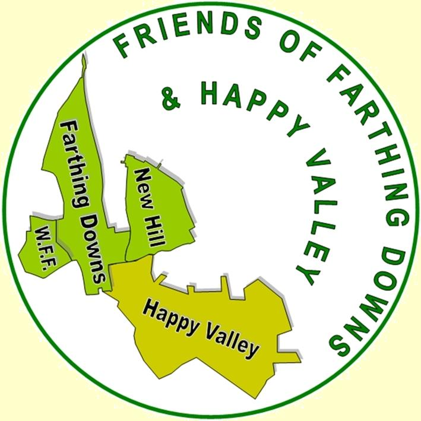

| |

| 
|
LOCAL GREEN SPACES
A critical review as part of Croydon’s Local Plan Revisions submitted
by the Friends of Farthing Downs and Happy Valley |
|
Green space has long been taken for granted. ‘A good’ that people enjoy and respect, and have not had to defend or justify. Having examined the underlying issues — if only hastily — the Friends conclude that more fundamental thinking needs to be done, than merely justifying specific local sites. This paper therefore ranges over their scope, new pressures on them, and their technical evaluation, ending with three major policy suggestions.
Introduction
The official inspection of the 2018 Plan determined that the many local open spaces in the borough needed more systematic appraisal if they were to be retained into the future. Many of the larger open spaces have acquired designations such as Site of Special Scientific Interest, or as Nature Reserve which lends protection. Some were purchased and given legal protection. But many local spaces emerged — some many decades ago — as part of local residential developments, and have no protection as the local authority has no statutory obligation to sustain or maintain them. Pressure on building land now requires the Council to validate their ongoing value to people living close by. Hence the Council’s review.
Valuing open spaces in and around Coulsdon
The street scene across much of south Croydon is predominantly green. Few urban areas could be said to be doing more to help reduce carbon emissions via the natural environment. Much of the dipslope of the North Downs running across the southern edge of the borough was purchased by the City of London as long ago as 1883 to protect its distinctive character. The former Coulsdon and Purley UDC got protection for parcels of land under the LCC’s Green Belt Act 1938 — Happy Valley, Coulsdon Manor, Kenley Common, Millstock and Pirbright. Private bequests led to the development and protection of the Marlpit Lane Memorial Ground, and Grange Park in the middle of Coulsdon.
But over the last hundred years as suburbs spread across Coulsdon a variety of open spaces were retained or developed — some as recreation grounds, some as nature reserves, some as decorative features within housing schemes, that have no formal function. It is these latter places that now appear to need justification, when space to build dwellings is at a premium. The maintenance and care of some seems somewhat unclear, even haphazard.
Notwithstanding that the landscape around Coulsdon is overwhelmingly ‘green’, the 2011 London Plans ‘All London Green Grid’ nevertheless saw south Croydon including Coulsdon as deficient in regional park, metropolitan park, district park, and local park provision! (Figs. 2A, 2B, 2C, 2D pp46 and 47). The Plan attempted to categorise the above four types of open space, together with ‘small open spaces’, ‘pocket parks’, and ‘linear open spaces’ (p44 Table 1). The picture that emerges, overall, is of a pattern of green open spaces established over eighty years ago, with almost nothing added since.
Open spaces under pressure
The demographic profile of southern Croydon is changing, as new housing developments, and redevelopment brings more young people to Coulsdon and surrounding neighbourhoods. The longstanding image of city-edge communities as retirement places is no longer valid. With this change comes more pressure on services, and on the green spaces. Development at Cane Hill has used more land of its former hospital estate than its designation as greenbelt was supposed to allow. The edge of Happy Valley at Chaldon has been spared being turned into a sizeable neighbourhood by Tandridge Council’s decision to deflect the proposed scheme to South Godstone. Turning the M23 to four lanes between Hooley and Gatwick signals the London Plan’s intention to intensify development along the corridor between central Croydon and the airport. All impacts on the green environment.
Build-up of pressure to turn open spaces into suburbs is well illustrated historically along Chaldon Way. Water and sewage pipelines were laid well into Happy Valley to allow house building to happen. Only growing concern in the 30’s to protect outstanding open space stopped the development. More recently, action by residents raised significant monies to allow the City of London to purchase Woodplace Farm Fields adjacent to Farthing Downs to prevent its purchase by developers.
Two factors need stressing. First, the scale of future population growth envisaged for Greater London. The current plan is for London’s population to grow over the next twenty years from eight to eleven million. An increase of over 40 percent. Such is the market pressure on the metropolis; to which government has no alternative strategy. Second, Croydon has reduced its open spaces conservation staff, placing accent instead on physical fitness training in parks and recreation grounds. A pincer movement on green spaces has gathered momentum.
Measuring value
Re-examination of Croydon’s local plan to justify retention of particular open spaces implies that the quality and quantity of local green open spaces can be objectively measured. It cannot be so in quite that way — whether for recreation grounds, village greens, copses of trees, or runs of vegetation along railways. Such pricing is too mechanistic and crude — absurd. There are no formulae that can measure carbon capture in relation to the treescape around Coulsdon; nor the amount of square yardage of recreation space against the size of a housing estate.
That said, there is room for saying that present nomenclature falls short. In Coulsdon, for example, a small green space at Woodhatch Spiney is listed (called Scrub Shaw), as is a piece of open space at Hillars Heath Road; but the much larger open space close by at Stoats Nest Village is not. Marlpit Lane Memorial Ground is listed, but the recreation grounds at Betts Wood, Higher Drive and Rickman Hill are not. On Croydon’s maps (Green Croydon for all; and Parks and Open Spaces) four places are listed as local nature reserves, while three others are listed only as nature reserves. Whether the distinction is one of size, ownership, habitat, or merely history, is not clear. Coulsdon Coppice is listed, where Dollipers Hill, Colescroft and Foxley Wood are not.
Gauging local opinion
The Friends Group takes the current demand in Local Plan Review seriously. We canvassed responses at the Old Coulsdon Fair on 6 July. We have urged responses through our website; we will stress the whole matter at the launch event for the National Nature Reserve on 25 July. We have approached individual households close to particular local open spaces such as Copse Hill Spinney and Chaldon Way Gardens. We will endeavour to collate responses that come to us, into a format that demonstrates the value local people attach to particular very local green spaces.
In summary
The Review serves to jolt the Coulsdon community into greater awareness of the heritage of green spaces that the area has acquired over many years, and enjoys. Many are what make the area so attractive. Clearly; they can no longer just be taken for granted. In overview three further initiatives will be needed to complete a more sustainable perspective on Coulsdon’s green spaces into the future:
1. to bring up to date ecological evaluations of the range of open spaces in the area. (The last update of the 1986 London Ecology Unit’s fundamental study of Nature Conservation in Croydon, was in 1998 under the title London Ecology Unit Resurvey.)
2. to reappraise the range of publications relating to green spaces produced by the Council and other organisations over the years, to achieve consistency and continued relevance today, including the typology of places that the present studies highlights.
3. to review management issues raised by the Review — who has responsibility for particular green spaces; how well is devolved management to other agencies actually working; and what is the role of the Council in this emerging situation.
|
|
Graham M Lomas
Chair, Friends of Farthing Downs
and Happy Valley
|
|